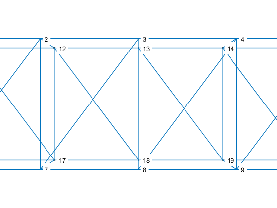

Contents
%%%%%%%%%%%%%%%%%%%%%%%%%%%%%%%%%%%%%%%%%%%%%%%%%%%%%%%%%%%%%%%%%%%%%%% % % Tarea 6, Homography: % % This file is an example of how homographies work. % %%%%%%%%%%%%%%%%%%%%%%%%%%%%%%%%%%%%%%%%%%%%%%%%%%%%%%%%%%%%%%%%%%%%%%% % Call for functions to use addpath('Functions')
Create escene and images for homography analysis
More information look for Tarea 4
[X,L] = scenegen( 'Large', 10 ); X(4,:) = 1; display3Dscene([],X,L) campos([5,5,5]) FOV = 20; Lookat = {[0 0 1]', [0 1 1]', [0 -1 1]'}; Position = [12 0 1]'; Focal = [1,9,15]; for i = 1:3 % two cameras campars.angle = FOV*(pi/180); % view angle campars.look_at = Lookat{i}; % orientation of optical axis campars.position = Position; % camera center campars.foclen = Focal(i); cam(i).pars = cameragen( campars ); % generate cameras cam(i).u = cam(i).pars.P * X; % 3D -> 2D projection % normalization to image plane cam(i).u = cam(i).u ./ repmat( cam(i).u(3,:), 3, 1 ); end [F1, ~, ~] = MakeImage(X,L,cam(1).pars,2); [F2, ~, ~] = MakeImage(X,L,cam(2).pars,3); [F3, ~, ~] = MakeImage(X,L,cam(3).pars,4);
ans =
Figure (1) with properties:
Number: 1
Name: ''
Color: [0.9400 0.9400 0.9400]
Position: [680 558 560 420]
Units: 'pixels'
Use GET to show all properties
 Homography between images 1 and 2
idxcorr12 = [3 4 8 9]; % Related points H1 = u2Hdlt( cam(1).u(:,idxcorr12), X(2:4,idxcorr12) ); % Homography scene to image 1 H2 = u2Hdlt( X(2:4,idxcorr12), cam(2).u(:,idxcorr12) ); % Homography image 2 to scene HI12 = u2Hdlt( cam(1).u(:,idxcorr12), cam(2).u(:,idxcorr12) ); % Homography image 2 to image1 HI12p = H2*H1; disp('The homography HI12 is equivalent to HI12p = H2*H1') HI12 = HI12/HI12(3,3), HI12p = HI12p/HI12p(3,3)
The homography HI12 is equivalent to HI12p = H2*H1
HI12 =
1.0298 -0.0000 -158.2617
0.0112 1.0184 -4.4234
0.0000 -0.0000 1.0000
HI12p =
1.0298 0.0000 -158.2617
0.0112 1.0184 -4.4234
0.0000 0.0000 1.0000
Homography between images 1 and 3
idxcorr13 = [2 3 7 8]; % Related points H1p = u2Hdlt( cam(1).u(:,idxcorr13), X(2:4,idxcorr13) ); % Homography scene to image 1 H3 = u2Hdlt( X(2:4,idxcorr13), cam(3).u(:,idxcorr13) ); % Homography image 3 to scene HI13 = u2Hdlt( cam(1).u(:,idxcorr13), cam(3).u(:,idxcorr13) ); % Homography image 3 to image1 HI13p = H3*H1p; disp('The homography HI13 is equivalent to HI13p = H3*H1p') HI13 = HI13/HI13(3,3), HI13p = HI13p/HI13p(3,3)
The homography HI13 is equivalent to HI13p = H3*H1p
HI13 =
0.9710 0.0000 153.6781
-0.0109 0.9889 2.6556
-0.0000 0.0000 1.0000
HI13p =
0.9710 0.0000 153.6781
-0.0109 0.9889 2.6556
-0.0000 0.0000 1.0000
Homography projection correction
% For plots IM1P = [2 3 4 7 8 9 12 13 14 17 18 19]; IM2P = [3 4 5 8 9 10 13 14 15 18 19 20]; IM3P = [1 2 3 6 7 8 11 12 13 16 17 18]; L1 = L(find(sum(ismember(L,IM1P),2)==2),:); L2 = L(find(sum(ismember(L,IM2P),2)==2),:); L3 = L(find(sum(ismember(L,IM3P),2)==2),:); % Projection of images through homographies Nu(1) = {cam(1).u}; Nu(2) = {inv(HI12)*cam(2).u}; Nu(3) = {inv(HI13)*cam(3).u}; for i = 2:3 Nu{i} = Nu{i}./repmat(Nu{i}(3,:),3,1); end MarkerColor = {'+b','*k','dr'}; for i=1:3 NewScene(4+i, cam(i).u, eval(['L' num2str(i)]), 'xg', 2, 2, [-200 800 0 400]) hold on NewScene(4+i, Nu{i}, eval(['L' num2str(i)]), MarkerColor{i}, 2, 2, [-200 800 0 400]), title(['Image ' num2str(i) '[green] and its homography projection']) hold off end for i=1:3 NewScene(8, Nu{i}, eval(['L' num2str(i)]), MarkerColor{i}, 2, 2, [-200 800 0 400]), title ('Panoramic') end